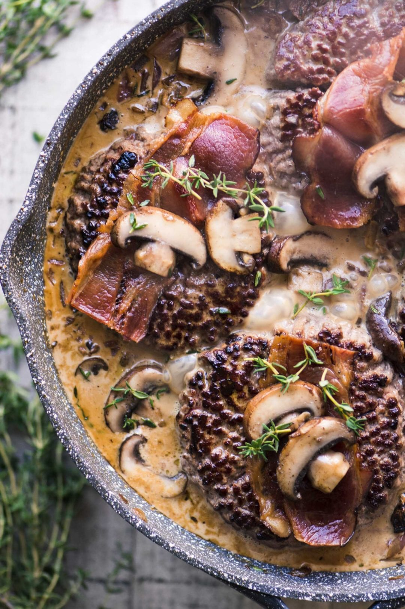

By switching, you increased your probability of winning to 67%. Enjoy your spoils!
“Valhalla Special”

Ingredients:
1/4 lb Bacon
1 1/2 lbs Ground Beef
1/2 oz Mushrooms (fresh and/or dried)
1/2 Medium Onion (chopped)
3 Cloves Minced Garlic
1/3 cup Heavy Cream
1/2 cup Beef Broth
1 Tbsp Worcestershire Sauce
1 Tbsp Fresh Thyme
Salt and Fresh Cracked Black Pepper to taste
Instructions:
Heat the cream to a simmer and then add the dried mushrooms. Stir to cover them with cream, and let sit for 30 minutes
Cook the bacon until crisp and place on paper towels. Set aside for topping your burgers
Drain off all but 2 Tbsp of grease from the pan and reheat on medium high heat. Brown the burgers well on both sides then remove to a plate and cover to keep warm.
Add a pat of butter and a tablespoon of oil to the pan and saute the fresh mushrooms, onions, and garlic for several minutes until the onions have softened and the mushrooms start to brown
Add the broth and be sure to scrape up any browned bits from the pan. Add the Worcestershire sauce, thyme, and the soaked wild mushrooms and their cream. Season to taste with salt and pepper and bring up to a simmer
Nestle the burgers back into the sauce, turn down the heat, and cook until the burgers are done through
Garnish each burger with a piece of bacon and a couple of mushroom slices